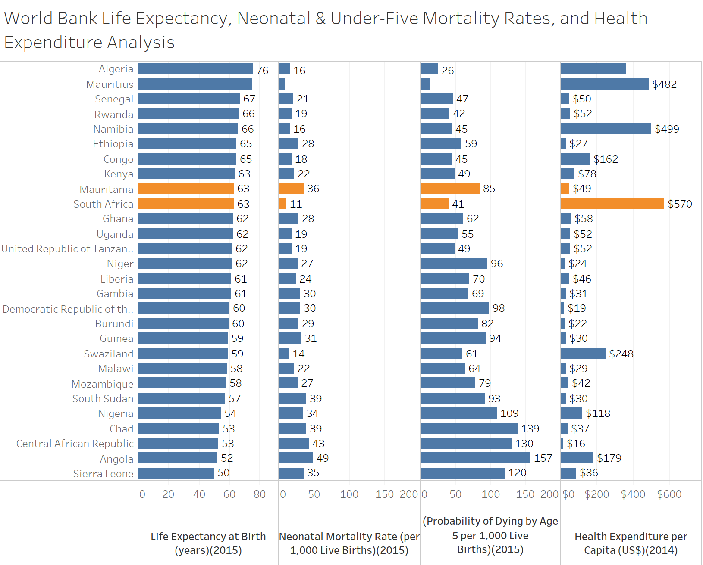

Todays post is a lesson in Facets, as well as humility. The task this week was to replicate the graph in Chapter 8 of Tableau for Healthcare in R. The graph in question is called a Table Lens (This is the name the book uses, however I did have trouble finding this name in Google searches), it is a collection of charts with a common theme, this time looking at countries in various WHO regions and some statistics associated with mortality as well as health expenditure. I say this is a lesson in humiltiy as I have read through the excellent book R for Data Science, and yet the idea of faceting a ggplot graph slipped my mind. This ended with hours of trying to find a package in R to line up graphs, and way more time then I care to admit spent on getting things prefect. I did find such a package called cowplots, which can be found here. While this is an excellent package, its use was unecessary and I reverted back to using the excellent facet feature of GGplot, which can be seen below! 
Load Libraries
library(magrittr) #pipes
library(ggplot2) #ploting
library(dplyr)
library(tidyr)
Import Data
ds <- readxl::read_xlsx(path = "../../../static/data/Tableau 10 Training Practice Data.xlsx"
,sheet = "03 - WHO Life Expect & Mort"
)
Graphs
hightlight_countries <- (c("Mauritania", "South Africa"))
g1 <- ds1 %>% filter(who_region == "Africa") %>%
mutate(name = factor(name, levels = c("life_expect_birth" , "neo_mort"
,"under_five_mort" , "health_expenditure"))
,highlight = country %in% hightlight_countries) %>%
ggplot(aes(x = country, y = value, fill = highlight)) +
geom_col(show.legend = FALSE) +
coord_flip() +
labs(
title = "World Bank Life Expectancy, Neonatal & Under-Five Mortality Rates, and Health Expenditure Analysis"
,x = NULL
,y = NULL
) +
facet_grid(~name, scales = "free_x",labeller = variable_labeller) +
theme_bw() +
geom_text(aes(label = round(value, 0)), hjust = 0) +
scale_y_continuous(expand = expand_scale(mult = c(0,0.2))) +
scale_fill_manual(values = c("TRUE" = "#fc8d59", "FALSE" = "#2b83ba"))
g1